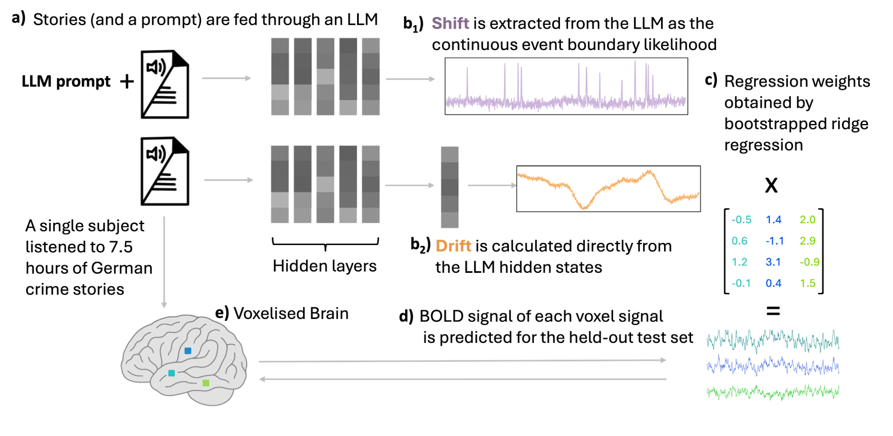

I am Davide Staub, a PhD student at Imperial College London working in the
Scalable Scientific Machine Learning Lab
under the supervision of Dr. Ben Moseley. My research focuses on
harnessing machine learning and physics to build differentiable tools for
reconstructing the three‑dimensional structure of exoplanet atmospheres from
JWST observations.
Before starting my PhD, I spent a year at the HomanLab within the
Psychiatric University Hospital of Zürich, where we combined brain imaging
and large language models to understand how the brain processes
narratives.
LinkedIn
Teaching ▶
Teaching content goes here. This section can be expanded later with details about your courses, lectures, or educational materials.
Research ▶
Current research
My PhD project aims to develop a single, differentiable pipeline that
converts all available JWST observations of a hot Jupiter—thermal
emission spectra, phase curves, eclipses and transmission spectra—into a
unified three‑dimensional temperature field \(T(\lambda, \phi, p)\). The
map uses a low‑dimensional spherical‑harmonics basis for horizontal
structure and smooth vertical modes, and the inversion is regularised
using physically motivated terms such as energy balance, global
radiative closure and hydrostatic consistency. This
framework treats the atmosphere as a shared state that must
simultaneously explain observations across multiple viewing geometries.
Previous work
While working at the HomanLab in Zürich, I studied how the brain tracks
the flow of meaning during natural story listening. We derived two
annotation‑free signals from a large language model: a drift
index that captures gradual semantic accumulation and a shift
index that marks discrete event boundaries. These
signals were fit to high‑resolution fMRI data from a participant
listening to crime stories. The shift predictions were robust in the
peri‑Sylvian auditory–language cortex (e.g., Heschl’s gyrus, planum
temporale/polare and superior temporal gyrus), whereas the drift
responses were comparatively weaker there but stronger in higher‑order
hubs such as the angular gyrus, precuneus and posterior cingulate. This
dissociation suggests that auditory‑language regions are dominated by
boundary signals, while default‑mode network hubs preferentially track
slow context integration.
Below are brain maps showing where each signal explained neural
responses. Bright colours indicate regions with stronger effects.
Shift: strong event‑boundary responses in auditory–language cortex.Drift: slow accumulation responses in higher‑order default‑mode regions.

Method: converting stories into drift and shift signals via a large language model and mapping them to brain responses.